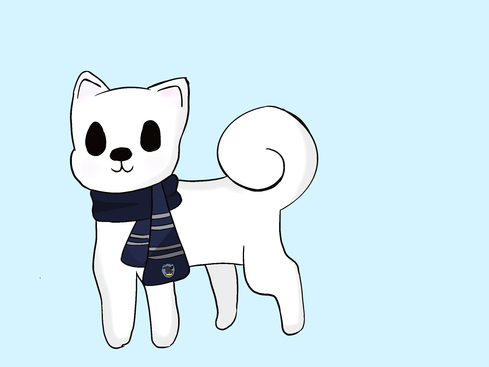
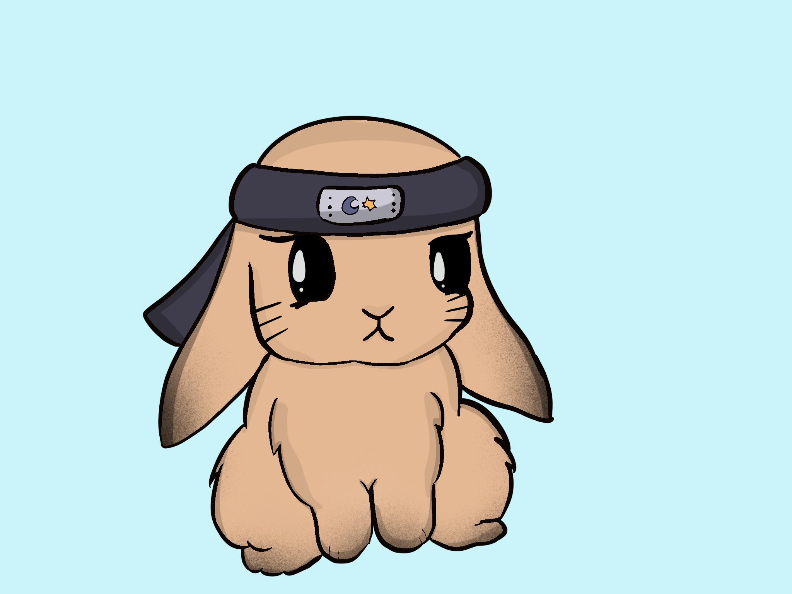

We have a hard working, skilled, artistic, and a friendly team. We work together to create the best products and we are all doing our part to help the company succeed. We are willing to work hard to improve our product and we will take feedback from anyone. We decided to name our company Jasmine Jewels because when we hear the word jasmine we think of something elegant and pretty and the bracelets that we are making are a perfect simple, but pretty bracelet for you to use. We are a great team and we want your help!
Gabi is a 7th grade student. In her free time she likes to try different types of art. She chose her icon because her favorite animal is a panda and she likes to listen to music.
Fiona is a 7th grade student, She likes to dance and ski. She chose her icon because she loves dogs. The scarf on the dog is a Ravenclaw scarf representing her love for Harry Potter and her Hogwarts house, Ravenclaw.
Iman is a 7th grade srudent. She likes to draw and read in her free time. She chose a bunny as her icon because she can be very energetic and calm at the same time. The headband on the bunny represents her love for anime.